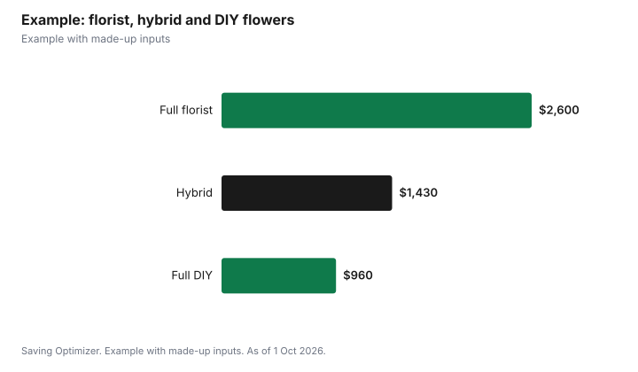

Weddings · Canada
Wedding Flowers: DIY, Bulk Order or Florist?
For most couples, the best value is a hybrid: hire a florist for bouquets, boutonnieres and one or two focal pieces, and use bulk-order or grocery flowers for centrepieces. Full DIY costs least in cash but needs people, buckets, fridge space and two or three days. Bulk orders have rules: Costco, for example, delivers its bulk and wedding flowers only Tuesday to Thursday, takes orders from a year to 10 business days ahead, and recommends arrival two to three days before the event so the flowers can open. A florist costs more but handles design, conditioning, delivery and setup.
Key takeaways
- Florists cost most but handle design, delivery and setup.
- Bulk orders cost less but arrive closed and need days of care.
- Costco: delivery Tuesday to Thursday only; order a year to 10 business days ahead.
- Hybrid: florist for personal flowers, bulk or DIY for tables.
- Rent vases and reuse ceremony pieces at the reception.
- Example with made-up inputs: florist, hybrid and DIY compared.
Where floral budgets go
| Item | What it covers | Saving idea |
|---|---|---|
| Personal flowers | Bouquets, boutonnieres, corsages | Fewer attendants' bouquets; single stems |
| Ceremony | Arch, aisle markers, altar arrangements | Move them to the reception |
| Reception | Centrepieces, head table, cake flowers | Bud vases, candles where allowed, greenery |
| Installations | Hanging pieces, flower walls | Skip or rent a backdrop |
| Delivery, setup and teardown | Labour and transport | Fewer locations; venue staff help |
Bulk-order flowers and timing
Bulk flowers ship in buckets or boxes, often closed so they survive transport. Costco's FAQ for bulk flowers and wedding packages says deliveries arrive Tuesday through Thursday only, with no weekend shipping. You can order from a year ahead up to two weeks (10 business days) before the date you need them; after that, you cannot choose a preferred date. It recommends choosing an arrival two to three days before the event so the flowers can hydrate and open, for example a Wednesday arrival for a Saturday wedding. It also notes that a 100-rose package comes as four bundles of 25 layered to reduce damage.
| Rule | Detail |
|---|---|
| Delivery days | Tuesday to Thursday; no weekend |
| Ordering window | Up to 1 year ahead; at least 10 business days before |
| Recommended arrival | 2 to 3 days before the event |
| Condition on arrival | Closed; need time to open |
| Colour choices | Confirmed by the supplier for some packages |
DIY workload
DIY is labour-heavy. Someone must receive the delivery, cut stems, remove leaves below the waterline, put flowers in clean water, keep them cool and out of the sun, and assemble arrangements the day before or morning of the wedding. You will need buckets, clippers, floral tape, ribbon, vases and a cool room. Then someone must transport finished pieces, set them up and clear them at the end. Assign a team, and do not make it the couple's job on the wedding morning. A simple schedule helps: delivery and conditioning on day one, arranging on day two, and setup on the wedding day by people who are not in the wedding party. Write down which arrangement goes where so helpers can set up without asking the couple.
- Do a practice arrangement a few weeks ahead.
- Keep designs simple: one or two flower types plus greenery.
- Plan transport that keeps arrangements upright.
- Ask the venue when you can bring flowers in and where to store them.
Seasonal flowers
Flowers in season locally or widely available year-round can cost less than out-of-season or specialty blooms. Ask your florist or supplier which flowers are easy to source for your month, and choose a colour palette rather than a specific variety so they can substitute. Greenery and foliage can fill arrangements at a lower cost.
Rentals and reuse
Ask whether your florist rents vases, arches and stands rather than selling them. Ceremony arrangements can be moved to the reception, and bridesmaids' bouquets can sit in vases on the head table. Ask the venue's rules first; the Gardiner Museum in Toronto, for example, prohibits open flames and confetti, glitter or projectiles, which affects candle centrepieces and petal tosses.
Non-floral and low-flower ideas
- Greenery garlands or potted herbs down long tables.
- Potted plants that guests or family take home.
- Lanterns, books or fruit as centrepiece bases, with a few stems.
- Dried or preserved flowers bought ahead and stored.
- Silk flowers for pieces that are moved or reused.
Mixing a few fresh stems with non-floral elements keeps the look full while cutting the number of flowers you need. Dried and silk flowers can be bought months ahead, which spreads costs and removes the timing risk of fresh deliveries.
Grocery stores and wholesalers
Grocery stores and local wholesalers are another source of bulk stems. Call ahead to ask whether they take large orders, how much notice they need and whether they can hold flowers in their cooler until pickup. Ask what happens if a variety is not available on the day, and have a backup colour or flower in mind. Buying from more than one supplier spreads the risk but adds pickups to an already busy week.
After the wedding
Plan where the flowers go after the reception. Guests can take centrepieces home, or a volunteer can deliver arrangements to a care home or hospital that accepts them; call first, as some have rules about fresh flowers. If you want to preserve your bouquet by drying or pressing, arrange it before the wedding so someone keeps it cool and gets it to the preserver quickly. Return rented vases and stands on time to avoid late fees and get your deposit back.
Questions to ask a florist
- What is included: design, delivery, setup, teardown, rentals?
- Can you substitute flowers if my choice is unavailable?
- Is there a minimum order?
- What deposit is required and what is the cancellation policy?
- Will you work with flowers I supply for some pieces?
Example with made-up inputs
These numbers are an example with made-up inputs. A wedding needs one bridal bouquet, four attendant bouquets, six boutonnieres and 12 centrepieces. Full florist: $2,600 including delivery and setup. Hybrid: florist for personal flowers at $900, plus bulk flowers for centrepieces at $350, vase rental $120 and supplies $60, for $1,430. Full DIY: bulk flowers $650, vases $180, supplies $90 and a made-up $40 for extra buckets and ribbon, for $960, plus about 15 hours of volunteer time.
| Option | Cost | Time from you and helpers |
|---|---|---|
| Full florist | $2,600 | Low |
| Hybrid | $1,430 | Moderate |
| Full DIY | $960 | High (about 15 hours) |

Steps
- List every floral item and its location.
- Decide which pieces need a professional.
- Get florist quotes for those pieces.
- Order bulk flowers within the supplier's window.
- Plan a team, tools, storage and transport for DIY.
- Check venue rules on candles, confetti and setup times.
Common mistakes
- Choosing a weekend arrival for bulk flowers that only ship midweek.
- Ordering after the cut-off.
- No cool storage for flowers.
- Leaving DIY assembly to the wedding morning.
- Ignoring venue rules on candles and confetti.
Related: 2027 wedding budget and venue types and costs.
Sources
- Costco Wholesale Canada, Frequently Asked Questions: Bulk Flowers and Wedding Packages, costco.ca, as of 1 Oct 2026.
- Gardiner Museum, Events Package, January 2026, gardinermuseum.on.ca, as of 1 Oct 2026.
- Flower, vase and supply amounts in the example are made-up inputs.
Frequently asked questions
Is DIY wedding flowers cheaper?
Usually in cash, but it takes helpers, tools, cool storage and time over two or three days.
When should bulk wedding flowers arrive?
Costco recommends two to three days before the event so they can hydrate and open.
Does Costco deliver bulk flowers on weekends?
No. Its FAQ says bulk and wedding flower deliveries arrive Tuesday through Thursday only.
How far ahead can I order bulk flowers from Costco?
From up to a year ahead to two weeks (10 business days) before you need them.
What is a hybrid flower plan?
A florist does bouquets and focal pieces; bulk or DIY flowers fill the centrepieces.
Can we use candles in centrepieces?
It depends on the venue. Some, such as the Gardiner Museum, prohibit open flames.
Researched and drafted with AI assistance and fact-checked against official Canadian sources. How we create content.
Disclosure: Saving Optimizer may earn a commission if a partner link is added later. No partnership is claimed on this page. Education only.